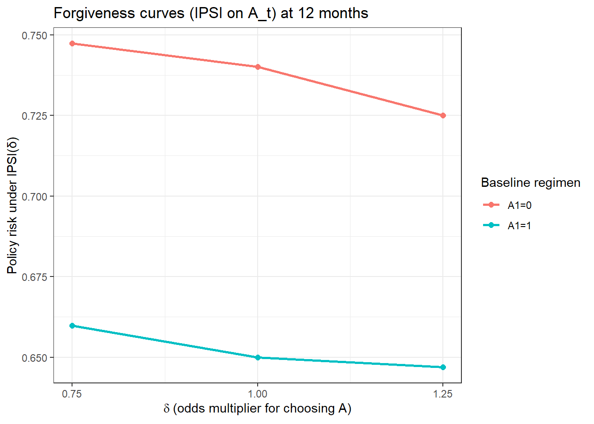
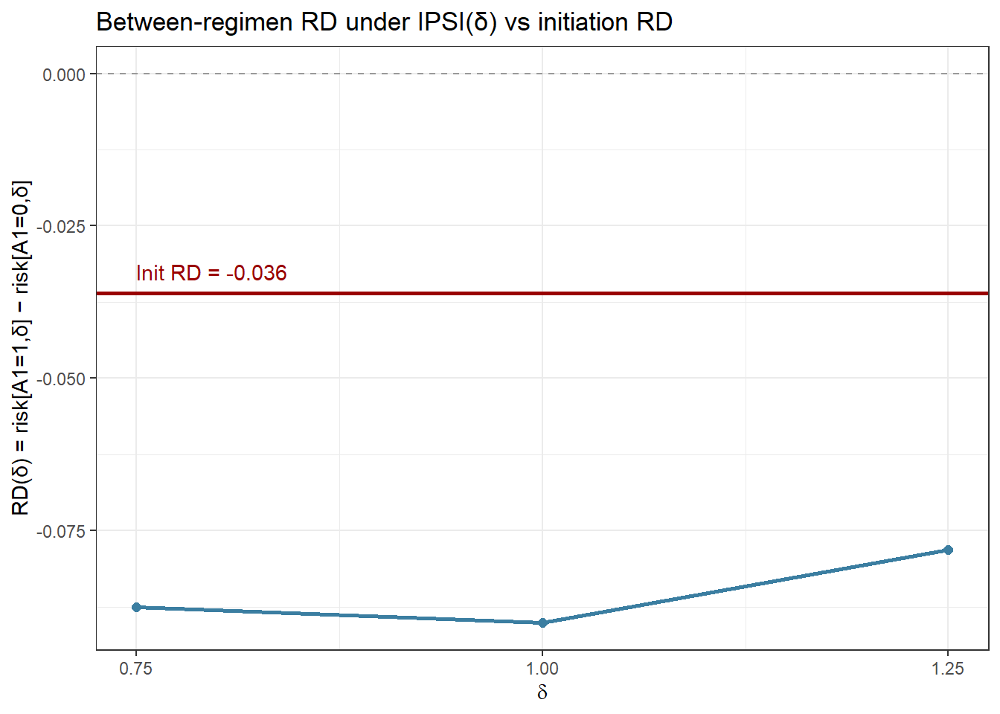

# Core estimation & ML
suppressPackageStartupMessages({
library(lmtp)
library(SuperLearner)
# data handling & viz
library(dplyr); library(tidyr); library(purrr); library(tibble)
library(ggplot2); library(broom)
# optional: Cox illustration
library(survival)
})
set.seed(1)ART Comparison under Imperfect Adherence: Causal Roadmap + lmtp implementation
Overview
Antiretroviral therapy (ART) is highly effective for suppressing HIV, but in real-world settings imperfect adherence often complicates comparisons between drug regimens. Traditional approaches, such as Cox proportional hazards regression, are widely used to analyze time-to-event outcomes like virologic failure. However, Cox models have important limitations: they estimate hazard ratios that are difficult to interpret causally, they assume proportional hazards across time, and they are sensitive to model misspecification and informative censoring.
In this study we apply modern causal inference methods to estimate the effect of initiating Drug A versus Drug B on the risk of virologic failure at 12 and 36 months. We frame the analysis using the Causal Roadmap, specifying explicit inclusion criteria, treatment strategies, outcome definitions, and handling of intercurrent events. Using HealthVerity claims and laboratory data, we implement longitudinal modified treatment policy (LMTP) estimators and targeted maximum likelihood estimation (TMLE). These methods allow us to standardize adherence patterns, flexibly adjust for baseline and time-varying confounding with ensemble machine learning, and obtain risk differences and relative risks that are directly interpretable as causal contrasts.
By contrast with Cox regressions, our approach yields estimates that are doubly robust to model misspecification, less sensitive to non-proportional hazards, and accompanied by valid confidence intervals even under complex censoring. This analysis demonstrates how targeted learning provides a more transparent and reliable framework for comparative effectiveness research in HIV, strengthening the evidentiary value of real-world data for clinical and regulatory decision-making.
Causal Roadmap SAP
Causal Question Formulation
Causal question: What is the causal effect of starting Drug A versus Drug B on virologic failure risk at 12 and 36 months, assuming both groups follow Drug A users’ adherence patterns? Population: Adults ≥18 years initiating first ART regimen (Drug A or B) with no prior ART in 365 days, baseline viral load measured within [-180,+30] days of initiation, laboratory linkage, pharmacy continuity, and ≥1 post-index viral load measurement. Excludes those with prior ART, pregnancy, missing demographics, no lab access, and optionally those with HBV contraindications.
Treatment: Starting Drug A and following observed real-world adherence pattern of Drug A users Comparator: Starting Drug B and following observed real-world adherence pattern of Drug A users (A-style adherence)
Outcome: Ever-virologic failure (VL ≥200) by 12 and 36 months (±30d windows); missing VL modeled via monitoring process. Risk differences: RD₁₂ = Risk₁₂(Drug A, A-adherence) - Risk₁₂(Drug B, A-adherence) and RD₃₆ = Risk₃₆(Drug A, A-adherence) - Risk₃₆(Drug B, A-adherence)
Data source: HealthVerity observational data with laboratory linkage and pharmacy continuity requirements
Target Population/Eligibility Criteria
Inclusion Criteria: * Adults ≥18 years at ART initiation * Confirmed HIV-1 infection: ≥2 HIV diagnosis codes on different dates (≥1 day apart), or ≥1 HIV diagnosis code plus HIV RNA lab evidence * Treatment-naïve new users: No combination ART regimens intended for HIV treatment in the 12 months prior to index * Index date = first observed prescription of Regimen A or Regimen B * Continuous medical + pharmacy enrollment for ≥12 months prior to index (baseline period) * Baseline labs available: HIV RNA and CD4 within −90 to +7 days of index * ≥1 post-baseline HIV RNA measurement observed during follow-up * Continuous enrollment for follow-up (up to 36 months or until censoring) Exclusion Criteria: * Prior ART exposure in baseline year or evidence of prior virologic failure (viral load >200 copies/mL while on any prior ART) * Pregnancy at baseline * Chronic HBV co-infection * Severe renal impairment (eGFR <30 mL/min/1.73m²) or severe hepatic impairment (Child-Pugh Class C) at baseline * Pediatric/adolescent patients (<18 years) * No post-initiation viral load data (outcomes not observable) * Missing key demographics (sex, date of birth) * Active opportunistic infections at baseline requiring immediate treatment, or recent opportunistic infections (within 30-60 days) * Concurrent medications with major drug interactions per product labeling * Recent hospitalization for any reason within 30 days prior to index
Time Zero Definition
Participants will be enrolled at the first moment they meet all eligibility criteria within the Jan 2020–Jan 2025 recruitment window (incident eligibility). At enrollment, participants are randomized to Drug A or Drug B, which defines time zero; follow-up for virologic failure outcomes begins immediately at randomization.
Treatment Protocol Specification
Treatment strategy for the treatment arm: Participants start Drug A immediately at randomization (time zero) and remain on Drug A indefinitely throughout the follow-up period as the default plan. No specific discontinuation criteria are mandated by the protocol. Participants are allowed to switch to other HIV treatments under certain circumstances including treatment failure, toxicity, and physician discretion, with no restrictions on which alternative treatments may be selected. Temporary treatment interruptions are permitted without duration limits, with resumption decisions at physician discretion. Dose adjustments of Drug A are permitted as clinically indicated. Additional HIV medications may be added alongside Drug A when clinically appropriate.
Treatment strategy for the comparator arm: Participants start Drug B immediately at randomization (time zero) and follow an identical treatment strategy to the Drug A arm in all respects. They remain on Drug B indefinitely as the default plan, with the same allowances for switching, interruptions, dose adjustments, and additional medications under the same clinical circumstances and physician discretion.
Strategy to address treatment non-adherence: * Choice: HYPOTHETICAL STANDARDIZED ADHERENCE * ICH E9(R1) mapping: HYPOTHETICAL * Interpretation: Evaluates the comparative effectiveness of Drug A versus Drug B under the hypothetical scenario where both treatment groups follow identical adherence patterns (rather than their naturally observed adherence behaviors). This approach isolates the drugs’ intrinsic effectiveness by removing adherence differences as a confounding factor, while still allowing imperfect adherence to occur. The causal question becomes: “What is the comparative effectiveness of Drug A versus Drug B if both groups followed the same adherence pattern?”
Outcome Definition
- Primary outcome definition: Time from ART initiation to confirmed virologic failure, where confirmed virologic failure is defined as: (1) two consecutive viral load results ≥200 copies/mL at least 7 days apart, OR (2) one viral load ≥200 copies/mL followed by regimen change within 90 days. Cumulative incidence (risk) will be evaluated at 12 months and 36 months post-initiation.
- Primary outcome type: Time-to-event
- Additional outcome 1 definition: Time from ART initiation to switching from the index regimen to the other study regimen (i.e., Drug A participants switching to Drug B, or Drug B participants switching to Drug A)
- Additional outcome 1 type: Time-to-event
- Administrative end of follow-up: 36 months For the additional outcome (time to switching regimens), I choose: Death from any cause: Hypothetical intervention (ICH “hypothetical” strategy) Interpretation: “What would switching rates be if death were prevented?” This maintains consistency with our primary outcome approach and aligns with the research question of understanding treatment switching patterns in the absence of competing mortality. Disenrollment/data loss and Administrative end of follow-up (36 months): Hypothetical intervention (ICH “hypothetical” strategy) This approach provides a coherent analytical framework across all outcomes, focusing on the biological effects of the interventions while removing the influence of intercurrent events that could obscure the treatment comparison.
Population Summary Specification
Primary outcome definition:
Time from ART initiation to confirmed virologic failure, with cumulative incidence evaluated at 12 months and 36 months post-initiation * Population summary of interest: Risk difference at 12 months and 36 months Additional outcome 1 definition: Time from ART initiation to switching from the index regimen to the other study regimen * Population summary of interest: Risk difference at 12 months and 36 months To summarize: you are studying the effect of initiating Drug A versus Drug B on virologic failure risk among adults with HIV-1 infection using HealthVerity observational data with laboratory linkage.
ICH E9(R1) Primary Estimand Table (Initiation Under Natural Care)
| ICH E9(R1) attribute | Primary estimand specification |
|---|---|
| Population | Adults (≥18y) with confirmed HIV-1 initiating new-user ART (Drug A or Drug B) in HealthVerity; continuous medical + pharmacy enrollment ≥12 months pre-index; baseline VL & CD4 within −90 to +7 days; ≥1 post-index VL; continuous enrollment until outcome or censoring. |
| Treatment (intervention) | Initiate Drug A at time zero; subsequent regimen changes, adherence, visits, and care follow the natural course (as observed). |
| Treatment (comparator) | Initiate Drug B at time zero; subsequent course natural (as observed). |
| Variable (endpoint) | Confirmed virologic failure by 12 and 36 months (±30-day windows): 2 VL ≥200 copies/mL ≥7 days apart (primary). Sensitivity: 1 VL ≥200 + regimen change ≤90 days. |
| Intercurrent events | Death: competing risk (primary). Switch/discontinuation: treatment-policy (failure counts regardless of changes). Disenrollment/data loss: right-censor; adjust with IPCW. Monitoring (VL ordering/attendance): model visit/ordering process; IPCW for monitoring. Administrative cutoff @36m: right-censor. |
| Summary measure | Risk difference (and supportive risk ratio) at 12 and 36 months: ( RD_t = P{Y(d^{=A})=1} - P{Y(d^{=B})=1}, t ). |
| Time origin | Index = first qualifying ART fill (A or B). |
| Identification assumptions | Consistency; sequential exchangeability (given baseline + time-varying covariates relevant for censoring/monitoring); positivity (support for initiating A/B and remaining observable); coarsening-at-random for censoring/monitoring. |
| Estimation | LMTP/TMLE (or SDR) with Super Learner for outcome/censoring/monitoring; influence-curve SEs; diagnostics (EIF≈0, bounded risks, overlap checks). Cox HRs may be reported descriptively only. |
| Sensitivity analyses | Endpoint threshold (≥400; single VL + switch); death as composite vs competing risk; monitoring window/rate assumptions; negative controls or E-/G-value style causal-gap analysis. |
Simulation with PDC adherence, monitoring, and death
We simulate realistic quarterly dynamics (K=4 ⇒ 12m): baseline risk, time-varying tolerability/adherence proxy L, PDC adherence, VL testing (monitoring), death (competing), disenrollment (censoring), switching, and a derived confirmed failure outcome that uses observed VLs.
#| label: sim_hiv
# Quarterly DGP: PDC, monitoring, death, switching, confirmed failure
sim_hiv <- function(n = 6000L, K = 4L, seed = 1L) {
set.seed(seed)
# Baseline
age <- pmax(18, rnorm(n, 42, 10))
male <- rbinom(n, 1, 0.55)
cd4 <- pmax(20, rnorm(n, 500, 180))
vl0 <- exp(rnorm(n, log(1e5), 0.7)) # copies/mL
# latent adherence propensity
eta_adher <- 0.5*scale(cd4)[,1] - 0.2*(log10(vl0) - 5) + 0.2*male + rnorm(n,0,0.7)
# baseline proxy L1 and baseline regimen A1
L1 <- pmin(pmax(eta_adher + rnorm(n,0,0.6), -3), 3)
pA1 <- plogis(-0.2 + 0.3*male - 0.15*(age-45)/10 + 0.5*L1)
A1 <- rbinom(n, 1, pA1)
# containers
A <- matrix(NA_integer_, n, K); A[,1] <- A1
PDC <- matrix(NA_real_, n, K)
L <- matrix(NA_real_, n, K); L[,1] <- L1
C <- matrix(1L, n, K) # 1=uncensored
D <- matrix(0L, n, K) # death indicator per quarter
VLq <- matrix(NA_real_, n, K)
M <- matrix(0L, n, K) # testing indicator per quarter (monitoring)
# hazards and VL dynamics
beta_A <- -0.6
beta_logVL <- 0.35
beta_PDC <- -0.8
beta_age <- 0.12
logit_base_fail <- -3.6
logit_base_death <- -4.2
betaD_age <- 0.20; betaD_cd4 <- -0.15; betaD_logVL <- 0.25
# underlying log10 VL trajectory
log10VL <- log10(vl0)
monitor_fun <- function(log10VL_t, cd4, PDC_t) plogis(-0.3 + 0.4*(log10VL_t-4.5) - 0.2*(cd4-500)/150 - 0.5*(PDC_t-0.7))
fail_time <- rep(NA_integer_, n)
death_time <- rep(NA_integer_, n)
for (k in 1:K) {
# PDC generation
if (k == 1) base_adher <- plogis(eta_adher + 0.2*A[,1])
if (k >= 2) base_adher <- plogis(0.7*atan(L[,k-1]) + 0.2*A[,k] + rnorm(n,0,0.3))
PDC[,k] <- pmin(pmax(rbeta(n, 1 + 6*base_adher, 1 + 6*(1-base_adher)), 0.001), 0.999)
# VL transition (unobserved truth)
log10VL <- pmax(2.0, log10VL + 0.2 - 0.35*A[,k] - 0.6*(PDC[,k] - 0.6) + rnorm(n,0,0.25))
# monitoring and observed VL
M[,k] <- rbinom(n, 1, monitor_fun(log10VL, cd4, PDC[,k]))
VLq[,k] <- ifelse(M[,k]==1, 10^rnorm(n, mean=log10VL, sd=0.15), NA_real_)
# failure and death hazards
alive <- is.na(death_time); notfailed <- is.na(fail_time)
p_fail <- plogis(logit_base_fail + beta_A*A[,k] + beta_logVL*(log10VL-4) + beta_PDC*(PDC[,k]-0.6) + beta_age*(age-45)/10)
new_fail <- (rbinom(n, 1, p_fail) == 1) & alive & notfailed
fail_time[new_fail & is.na(fail_time)] <- k
p_death <- plogis(logit_base_death + betaD_age*(age-50)/10 + betaD_cd4*(500-cd4)/150 + betaD_logVL*(log10VL-4))
new_death <- (rbinom(n, 1, p_death) == 1) & alive
D[new_death, k] <- 1L
death_time[new_death & is.na(death_time)] <- k
if (any(new_death)) {
idx <- which(new_death)
C[idx, k:K] <- 0L
}
# disenrollment/LTFU
p_cens <- plogis(-3.5 + 0.2*(age-45)/10 + 0.2*(log10VL-4) - 0.3*(PDC[,k]-0.6))
new_cens <- (rbinom(n, 1, p_cens) == 1) & (C[,k]==1L) & alive
if (any(new_cens)) {
i <- which(new_cens); C[i, k:K] <- 0L
}
# update L and switching
if (k < K) {
L[,k+1] <- pmin(pmax(rnorm(n, 0.2*(log10VL-4) - 0.4*(PDC[,k]-0.6) + rnorm(n,0,0.4), 0.7), -3), 3)
logit_pA_next <- -0.3 + 1.2*A[,k] - 0.8*(L[,k+1] > 0.8) + 0.25*L[,k+1] + 0.1*(log10VL-4)
A[,k+1] <- rbinom(n, 1, plogis(logit_pA_next))
}
}
# Confirmed failure from observed VLs: two observed VL ≥200 on >=2 distinct quarters
highVL <- (VLq >= 200) & (!is.na(VLq))
confirm_by_k <- function(mat) {
n <- nrow(mat); K <- ncol(mat)
conf <- rep(0L, n)
for (i in seq_len(n)) {
hits <- which(mat[i,])
if (length(hits) >= 2 && any(diff(hits) >= 1)) conf[i] <- 1L
}
conf
}
confirmed <- confirm_by_k(highVL)
Y12 <- as.integer(confirmed == 1L & C[,K]==1L)
data.frame(
age, male, cd4, vl0,
L1 = L[,1], A1 = A[,1], PDC1 = PDC[,1], M1 = M[,1],
L2 = L[,2], A2 = A[,2], PDC2 = PDC[,2], M2 = M[,2],
L3 = L[,3], A3 = A[,3], PDC3 = PDC[,3], M3 = M[,3],
L4 = L[,4], A4 = A[,4], PDC4 = PDC[,4], M4 = M[,4],
C1 = C[,1], C2 = C[,2], C3 = C[,3], C4 = C[,4],
D1 = D[,1], D2 = D[,2], D3 = D[,3], D4 = D[,4],
Y = Y12
)
}
dat <- sim_hiv()Nodes & learners
K <- length(grep("^A\\d+$", names(dat))); stopifnot(K >= 1)
trt_nodes <- paste0("A", 1:K)
baseline <- c("age","male","cd4","vl0")
time_vary <- list(c("L1","PDC1","M1"), c("L2","PDC2","M2"), c("L3","PDC3","M3"), c("L4","PDC4","M4"))
cens_nodes <- paste0("C", 1:K)
outcome <- "Y"
# modest/fast for demonstration; expand in later (trees/boosting/GAM/HAL) and increase folds for rare events
sl_lib <- c("SL.mean","SL.glm")Primary analysis — Initiation under natural care (set A1 only)
These are policy/shift functions that tell {lmtp} how to modify the treatment history for a counterfactual analysis:
d_initiate_A: set the baseline regimen A1 to 1 (“initiate Drug A”), and leave all later A2..AK as observed (natural course).
d_initiate_B: same but set A1 to 0 (“initiate Drug B”), leaving the rest natural.
This is exactly the “initiation under natural care” estimand: we only intervene at baseline and then let adherence, switching, and monitoring evolve as in the observed data.
{lmtp_tmle} estimates policy risk E{Y(d)} via TMLE for each shift:
trt = trt_nodes is the vector c(“A1”,“A2”,…,“AK”), i.e., the treatment nodes at each decision time.
baseline = baseline lists baseline covariates W.
time_vary = time_vary is a list of time-varying covariates L_t aligned by time (e.g., list(c(“L1”), c(“L2”),…)).
cens = cens_nodes gives interval censoring indicators (C1..CK, where 1 = uncensored through that interval).
outcome_type = “binomial” means the outcome Y is a fixed-horizon binary (e.g., failure by 12 months).
learners_trt, learners_outcome define the Super Learner libraries used to model treatment/censoring and outcome nuisances.
folds = cross-validation folds; 2 is fast for demos; use 5+ for stability in real runs.
fitA is the estimated risk if everyone were assigned A1 := 1 (Drug A) at baseline; fitB is the analogous risk for A1 := 0 (Drug B).
Now we run the code:
d_initiate_A <- function(data, trt) ifelse(trt == "A1", 1L, data[[trt]])
d_initiate_B <- function(data, trt) ifelse(trt == "A1", 0L, data[[trt]])
fitA <- lmtp_tmle(
data = dat, trt = trt_nodes, outcome = outcome,
baseline = baseline, time_vary = time_vary, cens = cens_nodes,
shift = d_initiate_A, outcome_type = "binomial",
learners_trt = sl_lib, learners_outcome = sl_lib, folds = 2
)
fitB <- lmtp_tmle(
data = dat, trt = trt_nodes, outcome = outcome,
baseline = baseline, time_vary = time_vary, cens = cens_nodes,
shift = d_initiate_B, outcome_type = "binomial",
learners_trt = sl_lib, learners_outcome = sl_lib, folds = 2
)
rd_init <- lmtp_contrast(fitA, ref = fitB, type = "additive")
rr_init <- lmtp_contrast(fitA, ref = fitB, type = "rr")
rd_init::: {.cell-output .cell-output-stdout}
shift ref estimate std.error conf.low conf.high p.value
1 0.697 0.733 -0.036 0.0221 -0.0793 0.00722 0.103rr_init::: {.cell-output .cell-output-stdout}
shift ref estimate std.error conf.low conf.high p.value
1 0.697 0.733 0.951 0.0295 0.893 1.01 <0.001::: :::
Secondary — Adherence policy (Gap-cap LMTP on PDC)
PDC (proportion of days covered) is a measure of how regularly someone fills their HIV medicine — a number between 0 and 1 (0 = never picked up pills, 1 = always had pills). In the simulated data, the continuous PDC has been turned into bins (for example: 0–10%, 10–20%, …, 90–100%). That’s the “discretized PDC.”
The gap-cap policy is a hypothetical rule that says: no one is allowed to have coverage lower than a threshold (say 80%). If a patient’s PDC in a given time period was 30%, the policy would “bump” them up to the lowest bin that represents at least 80%. If they already had ≥80% PDC, their value stays the same.
By applying this policy in the LMTP framework, the model is asking: “What would the 12-month risk of virologic failure be if, at every quarter, we intervened so that all patients had at least 80% adherence, compared with the risks we see under actual adherence patterns?”
So the output is an estimated risk under the gap-cap policy (and contrasts, if you compare it to natural adherence or between regimen groups).
We discretize because {lmtp} needs to model the treatment mechanism. That is simpler if PDC is represented as categories (bins) rather than as a raw continuous number — then we can use standard classification learners.
This differs from Cox regression because a Cox model would relate observed adherence to hazards of failure, assuming proportional hazards and correct model form, whereas the LMTP gap-cap analysis instead answers a policy question: “If everyone’s adherence were improved to at least 80%, what would the outcome distribution look like?” It uses targeted learning and machine learning to flexibly model confounders and treatment assignment, so the result is a causal risk difference under that policy, not just an association.
In short: the “gap-cap with discretized PDC” is estimating the effect of a hypothetical adherence-support intervention that prevents patients from ever dropping below 80% adherence, and then projecting how much that would change virologic failure risk at your chosen time points.
# treat PDC nodes as trt; include regimen in time-varying covariates
## 1) Discretize PDC into ordered factors per quarter
breaks <- seq(0, 1, length.out = 12) # 11 bins
pdc_disc_nodes <- paste0("PDCd", 1:K)
for (k in 1:K) {
v <- pmin(pmax(as.numeric(dat[[paste0("PDC", k)]]), 1e-6), 1 - 1e-6)
dat[[pdc_disc_nodes[k]]] <- cut(v, breaks = breaks, include.lowest = TRUE, right = FALSE)
}
## 2) Keep time-varying covariates as before (exclude discretized trt node itself)
time_vary_pdc_disc <- lapply(1:K, function(k) {
vars <- c(paste0("L", k), paste0("A", k))
vars[vars %in% names(dat)]
})
## 3) Gap-cap shift for binned PDC: map the bin’s **lower edge** to floor at theta
cap_pdc_disc <- function(theta = 0.80) {
force(theta)
function(data, trt) {
# trt is factor; replace levels whose lower edge < theta to the level whose lower edge >= theta
levs <- levels(data[[trt]])
lo <- as.numeric(sub("\\[(.*),.*\\)", "\\1", gsub("\\[|\\)", "", levs))) # left edges
# find target level index
tgt <- which(lo >= theta)
if (length(tgt) == 0) tgt <- length(levs)
tgt_level <- levs[min(tgt)]
# replace any level with left-edge < theta by tgt_level
x <- as.character(data[[trt]])
x[ lo[match(x, levs)] < theta ] <- tgt_level
factor(x, levels = levs)
}
}
## 4) Fit with classification learners for trt and SL for outcome
sl_lib <- c("SL.mean","SL.glm")
fit_gapcap_disc <- lmtp_tmle(
data = dat,
trt = pdc_disc_nodes,
outcome = outcome,
baseline = baseline,
time_vary = time_vary_pdc_disc,
cens = cens_nodes,
shift = cap_pdc_disc(0.80),
outcome_type = "binomial",
learners_trt = sl_lib, # multinomial/ordinal via SL.glm / SL.glmnet
learners_outcome = sl_lib,
folds = 2
)
broom::tidy(fit_gapcap_disc)Forgiveness curves — IPSI on regimen + combined plot
We (i) compute policy risk under δ∈{0.75, 1.00, 1.25} separately for baseline initiators A1=1 vs A1=0 and (ii) overlay the primary initiation RD for visual context.
#| label: forgiveness
# split on baseline regimen
dat_A <- dat |> filter(A1 == 1L)
dat_B <- dat |> filter(A1 == 0L)
fit_ipsi_risk <- function(data, delta, folds = 2) {
lmtp_tmle(
data = data,
trt = trt_nodes,
outcome = outcome,
baseline = baseline,
time_vary = time_vary,
cens = cens_nodes,
shift = ipsi(delta),
outcome_type = "binomial",
learners_trt = sl_lib, learners_outcome = sl_lib,
folds = folds
) |>
broom::tidy() |>
mutate(delta = delta) |>
select(delta, estimate, std.error, conf.low, conf.high)
}
deltas <- c(0.75, 1.00, 1.25)
risks <- map_dfr(deltas, \(d) {
bind_rows(
fit_ipsi_risk(dat_A, d) |> mutate(group = "A1=1"),
fit_ipsi_risk(dat_B, d) |> mutate(group = "A1=0")
)
})
rd_delta <- risks |>
select(delta, group, estimate) |>
pivot_wider(names_from = group, values_from = estimate) |>
mutate(RD = `A1=1` - `A1=0`)
# Lines for plotting
init_line <- tibble(
delta = deltas,
RD_init = rd_init$estimate
)
p_forgive <- ggplot(risks, aes(x = delta, y = estimate, color = group)) +
geom_line(size = 1) + geom_point(size = 2) +
scale_x_continuous(breaks = deltas) +
labs(title = "Forgiveness curves (IPSI on A_t) at 12 months",
x = expression(delta~"(odds multiplier for choosing A)"),
y = "Policy risk under IPSI(δ)", color = "Baseline regimen") +
theme_bw()
p_rd <- ggplot(rd_delta, aes(x = delta, y = RD)) +
geom_hline(yintercept = 0, linetype = 2, color = "grey60") +
geom_line(size = 1, color = "#3B7EA1") + geom_point(size = 2, color = "#3B7EA1") +
# overlay the initiation RD as a flat reference
geom_hline(yintercept = rd_init$estimate$estimate, color = "#990000", size = 0.9) +
annotate("text", x = min(deltas), y = rd_init$estimate$estimate,
label = sprintf("Init RD = %.3f", rd_init$estimate$estimate),
hjust = 0, vjust = -0.8, color = "#990000") +
scale_x_continuous(breaks = deltas) +
labs(title = "Between-regimen RD under IPSI(δ) vs initiation RD",
x = expression(delta), y = "RD(δ) = risk[A1=1,δ] − risk[A1=0,δ]") +
theme_bw()
p_forgive
p_rd
Operating characteristics: mini grid (bias/SE/coverage)
This grid varies baseline overlap, monitoring informativeness, and event frequency. It uses a quick Monte-Carlo “truth” per cell; scale up reps/grid for SAP-grade OC.
make_scenario <- function(overlap = 0.5, monitor = 0.5, base_event = -3.2, n = 3000, K = 4, seed = 1L) {
set.seed(seed)
age <- rnorm(n, 45, 10); cd4 <- pmax(50, rnorm(n, 500, 150)); male <- rbinom(n, 1, 0.55)
L1 <- pmin(pmax(rnorm(n, 0, 1), -3), 3)
logit_pA1 <- (1-2*overlap)*0.8 + 0.25*male - 0.002*(cd4-500)/100 + 0.4*L1
A1 <- rbinom(n, 1, plogis(logit_pA1))
L <- matrix(NA_real_, n, K); L[,1] <- L1
A <- matrix(NA_integer_, n, K); A[,1] <- A1
C <- matrix(1L, n, K)
beta_A <- -0.8; beta_L <- 0.6; beta_W <- 0.15
T_event <- rep(K+1L, n)
for (k in 1:K) {
if (k >= 2) L[,k] <- pmin(pmax(rnorm(n, 0.2*(1-A[,k-1]) + 0.5*plogis(L[,k-1]), 0.8), -3), 3)
lp <- base_event + beta_A*A[,k] + beta_L*L[,k] + beta_W*scale(age)[,1]
new_event <- rbinom(n, 1, plogis(lp)) * (T_event > K)
T_event[new_event == 1L] <- pmin(T_event[new_event == 1L], k)
pcens <- plogis(-3 + monitor*(0.3*scale(age)[,1] + 0.25*L[,k]))
cens_k <- rbinom(n, 1, pcens) * (rowSums(C, na.rm=TRUE) == k-1)
if (any(cens_k == 1L)) { i <- which(cens_k == 1L); C[i, k:K] <- 0L }
if (k < K) {
logit_pA_next <- -0.3 + 1.2*A[,k] - 0.9*(L[,k] > 0.8) + 0.3*L[,k]
A[,k+1] <- rbinom(n, 1, plogis(logit_pA_next))
}
}
Y <- as.integer((T_event <= K) & (C[,K] == 1L))
tibble(
age=age, cd4=cd4, male=male,
L1=L[,1], A1=A[,1], L2=L[,2], A2=A[,2],
L3=L[,3], A3=A[,3], L4=L[,4], A4=A[,4],
C1=C[,1], C2=C[,2], C3=C[,3], C4=C[,4],
Y=Y
)
}
one_rep <- function(dat) {
trt_nodes <- paste0("A", 1:4)
baseline <- c("age","cd4","male")
time_vary <- list(c("L1"), c("L2"), c("L3"), c("L4"))
cens_nodes<- paste0("C", 1:4)
outcome <- "Y"
sl_lib <- c("SL.mean","SL.glm","SL.glmnet")
dA <- function(data, trt) ifelse(trt == "A1", 1L, data[[trt]])
dB <- function(data, trt) ifelse(trt == "A1", 0L, data[[trt]])
fA <- lmtp_tmle(dat, trt_nodes, outcome, baseline, time_vary, cens_nodes,
shift = dA, outcome_type = "binomial", learners_trt = sl_lib, learners_outcome = sl_lib, folds = 2)
fB <- lmtp_tmle(dat, trt_nodes, outcome, baseline, time_vary, cens_nodes,
shift = dB, outcome_type = "binomial", learners_trt = sl_lib, learners_outcome = sl_lib, folds = 2)
con <- lmtp_contrast(fA, ref = fB, type = "additive")
c(est = con$estimate, se = con$std.error, lo = con$conf.low, hi = con$conf.high)
}
run_grid <- function(reps = 100, n = 2500,
overlap_vals = c(0.3, 0.5),
monitor_vals = c(0.2, 0.8),
baseEv_vals = c(-3.6, -3.2)) {
truth_of <- function(overlap, monitor, baseEv) {
big <- make_scenario(overlap, monitor, baseEv, n = 200000, seed = 777)
trt_nodes <- paste0("A", 1:4)
baseline <- c("age","cd4","male")
time_vary <- list(c("L1"), c("L2"), c("L3"), c("L4"))
cens_nodes<- paste0("C", 1:4)
outcome <- "Y"
sl_lib <- c("SL.mean","SL.glm","SL.glmnet")
dA <- function(data, trt) ifelse(trt == "A1", 1L, data[[trt]])
dB <- function(data, trt) ifelse(trt == "A1", 0L, data[[trt]])
fA <- lmtp_tmle(big, trt_nodes, outcome, baseline, time_vary, cens_nodes,
shift = dA, outcome_type = "binomial", learners_trt = sl_lib, learners_outcome = sl_lib, folds = 2)
fB <- lmtp_tmle(big, trt_nodes, outcome, baseline, time_vary, cens_nodes,
shift = dB, outcome_type = "binomial", learners_trt = sl_lib, learners_outcome = sl_lib, folds = 2)
lmtp_contrast(fA, ref = fB, type = "additive")$estimate
}
grid <- expand_grid(overlap = overlap_vals, monitor = monitor_vals, baseEv = baseEv_vals) |>
mutate(true_RD = pmap_dbl(list(overlap, monitor, baseEv), truth_of))
results <- grid %>%
mutate(res = pmap(list(overlap, monitor, baseEv), function(ov, mo, be){
replicate(reps, {
dat <- make_scenario(ov, mo, be, n = n, seed = sample.int(1e7, 1))
one_rep(dat)
}) %>% t() %>% as_tibble(.name_repair = "minimal") %>% setNames(c("est","se","lo","hi"))
})) %>%
unnest(res) %>%
group_by(overlap, monitor, baseEv, true_RD) %>%
summarise(mean_est = mean(est),
mc_se = sd(est),
bias = mean(est - true_RD),
cover = mean(lo <= true_RD & hi >= true_RD),
.groups = "drop")
results
}
# Small run (increase reps / cells in SAP)
grid_summ <- run_grid(reps = 5, n = 1000)
grid_summCox (illustration only; not the estimand)
#| label: cox-illustration
# Build start-stop data if Y1..YK not present; otherwise adapt
K <- length(grep("^A\\d+$", names(dat)))
datC <- dat %>% mutate(id = row_number()) %>%
pivot_longer(cols = matches("^([ALCYDM]\\d+)$"),
names_to = c(".value","t"),
names_pattern = "([A-Z]+)(\\d+)") %>%
mutate(t = as.integer(t),
start = t-1L, stop = t) %>%
arrange(id, t) %>%
group_by(id) %>%
mutate(event = ifelse(t == 4 & Y == 1L, 1L, 0L)) %>%
ungroup()
cox_fit <- coxph(Surv(start, stop, event) ~ A + L + age + cd4 + male, data = datC)
summary(cox_fit)Call:
coxph(formula = Surv(start, stop, event) ~ A + L + age + cd4 +
male, data = datC)
n= 24000, number of events= 3363
coef exp(coef) se(coef) z Pr(>|z|)
A -2.499e-02 9.753e-01 3.501e-02 -0.714 0.47534
L 2.050e-02 1.021e+00 2.129e-02 0.963 0.33559
age -5.075e-03 9.949e-01 1.708e-03 -2.972 0.00296 **
cd4 -1.360e-03 9.986e-01 9.929e-05 -13.700 < 2e-16 ***
male -6.044e-02 9.413e-01 3.465e-02 -1.744 0.08110 .
---
Signif. codes: 0 '***' 0.001 '**' 0.01 '*' 0.05 '.' 0.1 ' ' 1
exp(coef) exp(-coef) lower .95 upper .95
A 0.9753 1.0253 0.9106 1.0446
L 1.0207 0.9797 0.9790 1.0642
age 0.9949 1.0051 0.9916 0.9983
cd4 0.9986 1.0014 0.9984 0.9988
male 0.9413 1.0623 0.8795 1.0075
Concordance= 0.606 (se = 0.007 )
Likelihood ratio test= 203.2 on 5 df, p=<2e-16
Wald test = 201.8 on 5 df, p=<2e-16
Score (logrank) test = 202 on 5 df, p=<2e-16